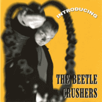

the Beetle Crushers - Introducing (2004)
01 - Dynamite (2:30)
02 - Railroad Station Blues (2;21)
03 - Time To Say Goodbye (2:17)
04 - Jimmy's Car & Johnny's Girl (2:08)
05 - You've Got What I Like (1:43)
06 - Sally Do The Jerk! (2:03)
07 - Hey There Dolly (2:16)
08 - Loretta (2:27)
09 - Let's Go Drinkin' (2:58)
10 - I Don't Wanna (2:27)
11 - By Your Window (3:16)
12 - Darling Nelly Grey (2:50)
13 - Won't You Be My Baby (2:01)
14 - Beetle Crusher Bop (1:33)
15 - Flick Knife Jive (2:14)
16 - So Many Girls To Love (1:34)
© Goofin' Records :: [GRCD 6125]
Notes
Finland.
CD release with four bonus tracks compared to LP release [GRLP 61203] of this album.
Bonus tracks (13-16) are from "Flick Knife Jive" EP [2001, El Tigre Records, TIGEP 1001]
reference information: Discogs®
Review
228/366 (Project 366)
Promoted as untamed Revival Rock and Roll - the sound is really about such a view. Stylish, with a bit city groove, vigorous and with different tones. The ending of the album is in a very gentle Revival Teds mood. Melodiously rockin' beat, lovely lyrically and inspired by kind of old time Pop, Folk and general Rock. Of course, also with a furiously crazy bop and with all other very fine and exciting Rock-A-Billy tunes. Shakin' and stompin', dancin' and boppin'. Just have fun and go wild!